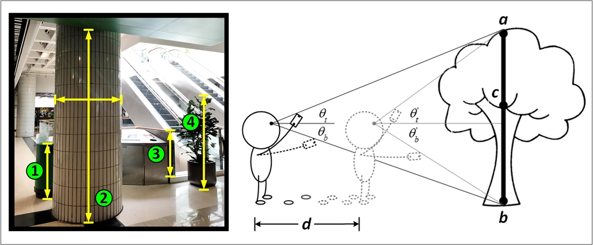
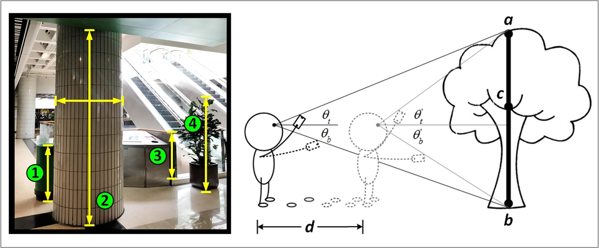
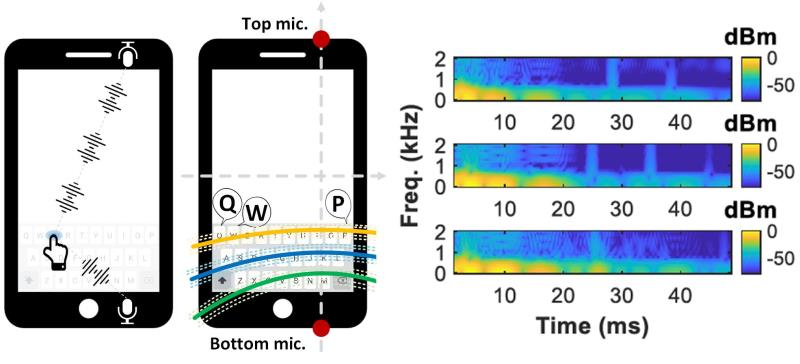

AdaDeep: A Usage-Driven, Automated Deep Model Compression Framework for Enabling Ubiquitous Intelligent Mobiles
Sicong Liu, Junzhao Du, Kaiming Nan, Atlas Wang, Yingyan Lin
IEEE Transactions on Mobile Computing (TMC), 2020
[paper]
scliu@nwpu.edu.cn
Associate Professor
Northewestern Polytechnical University
I'm currently an associate professor in the School of Computer Science at Northwestern Polytechnical University. I received my Ph.D. degree from Xidian University, China, in 2020. .

Sicong Liu, Junzhao Du, Kaiming Nan, Atlas Wang, Yingyan Lin
IEEE Transactions on Mobile Computing (TMC), 2020
[paper]Sicong Liu, Junzhao Du, Anshumali Shrivastava, Lin Zhong
ACM UbiComp (IMWUT), 2019
[paper]
Sicong Liu, Yingyan Lin, Zimu Zhou, Kaiming Nan, Hui Liu, Junzhao Du
ACM MobiSys, 2018
[paper]Sicong Liu, Zimu Zhou, Junzhao Du, Longfei Shangguan, Jun Han, Xin Wang
ACM UbiComp (IMWUT), 2017, Distinguished Paper Award
[paper]Sicong Liu, Junzhao Du, Hui Liu, Rui Li, Xue Yang, Kewei Sha
IEEE sensors journal, 2017
[pdf]Google Scholar
NWPU Homepage
Opensource China